Life was simple. Life was NORMAL. This was Timeline A. The ORIGINAL timeline.
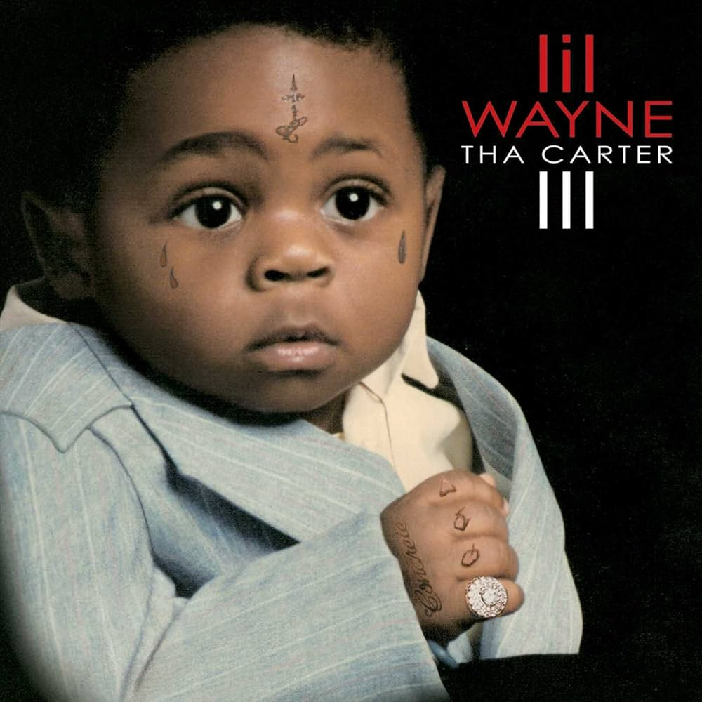
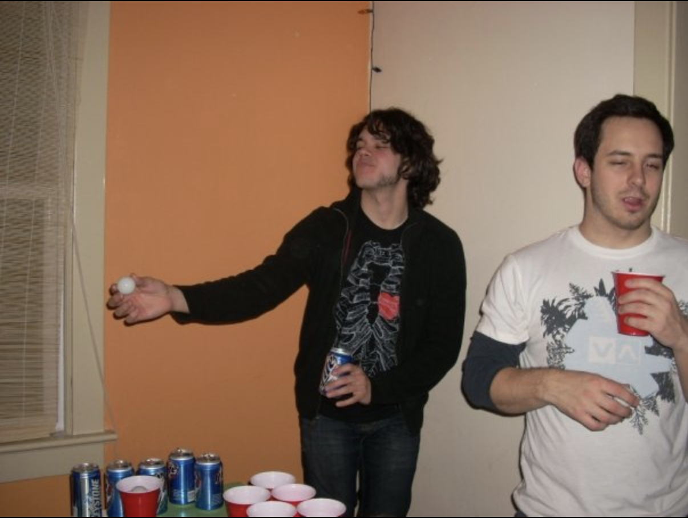
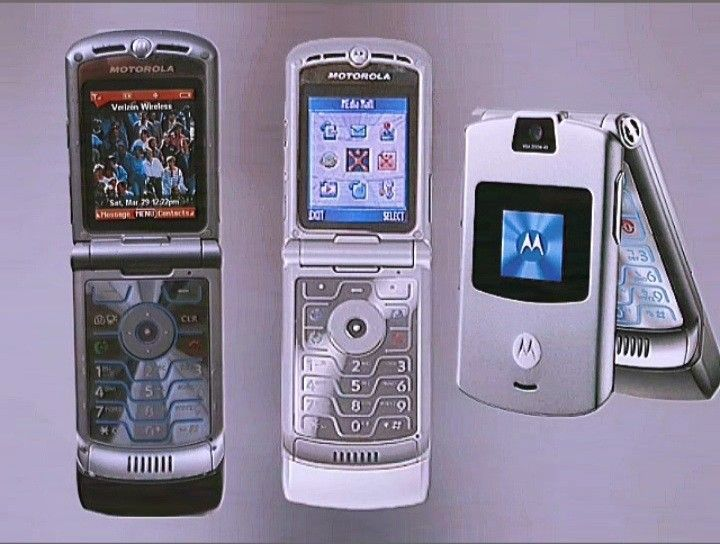
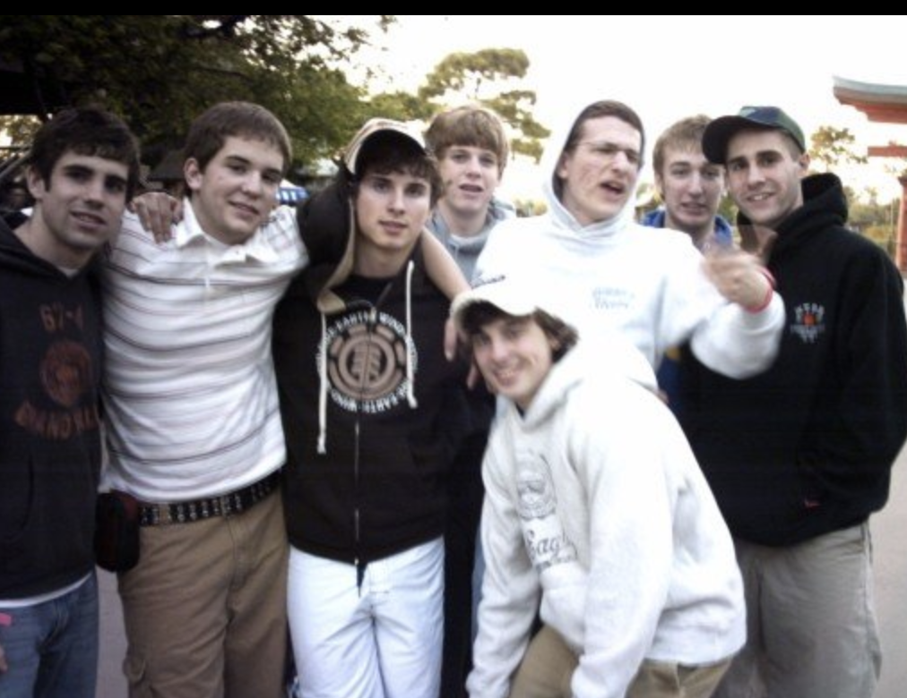
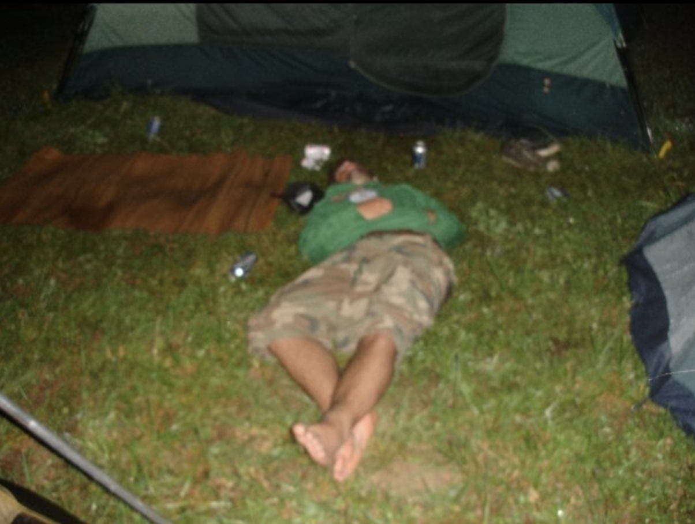
But then... something happened.
(Use arrow keys to continue →)
⚠ ⚠ ⚠ WARNING ⚠ ⚠ ⚠
WHAT IF I TOLD YOU...
On September 10, 2008,
the world as we knew it ENDED.
We just didn't realize it yet.
WHAT HAPPENED???
The Large Hadron Collider fired its first beam on September 10, 2008.
IT RIPPED A HOLE IN SPACETIME!!!
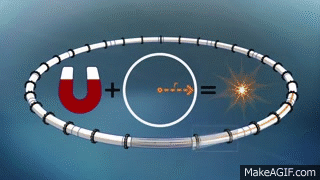
We shifted into TIMELINE B — Timeline A still exists... but we can't reach it
Those were the Days of the Old...
WELCOME TO
DAYS OF THE NEW
Timeline B | September 10, 2008 - Present
SEPTEMBER 10, 2008 — 10:28 AM
THE MOMENT REALITY FRACTURED
Scientists at CERN detected:
Particles in TWO PLACES at once!!!
Electromagnetic pulse (NOT planned)
Quantum foam became VISIBLE
Scientists felt "shimmer" in vision
Overwhelming déjà vu
In 0.000003 seconds... everything changed
5 DAYS LATER...
SEPTEMBER 15, 2008
Lehman Brothers COLLAPSED
They blame "subprime mortgages"... But the REAL reason: Timeline shift caused quantum changes in human decision-making
The 2008 financial crisis = Reality destabilizing!!!
SEPTEMBER 19, 2008
The LHC "malfunctioned" - needed 14 MONTHS of repairs
Official story: "electrical fault"
REAL STORY: The rift tried to heal itself!!! Universe fighting back!!!
14 months = studying the rift, learning to stabilize it
THE COVER-UP
Phase 1: Scientists (2008–2009)
Select physicists brought in under NDAs. Others were SILENCED.
Phase 2: Governments (2009–2010)
Intelligence agencies got involved. Agreement: exploit the knowledge but KEEP IT QUIET
Phase 3: Hollywood (2010–2012)
If you can't hide the truth... NORMALIZE IT
THEY TOLD US IN THE MOVIES!!!
Inception (2010)
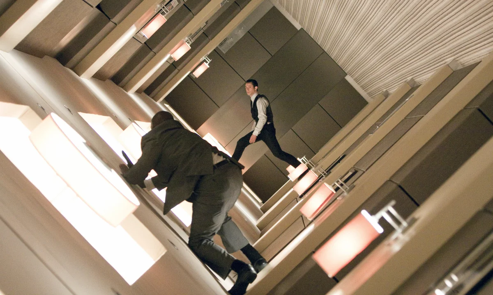
Christopher Nolan was given REAL quantum mechanics data. Movie about layered realities released RIGHT AFTER the shift to make us think it's "just fiction"
Source Code (2011)
Literally about jumping between TIMELINES. Coincidence??? I THINK NOT!!!
THE MANDELA EFFECT = TIMELINE A MEMORIES
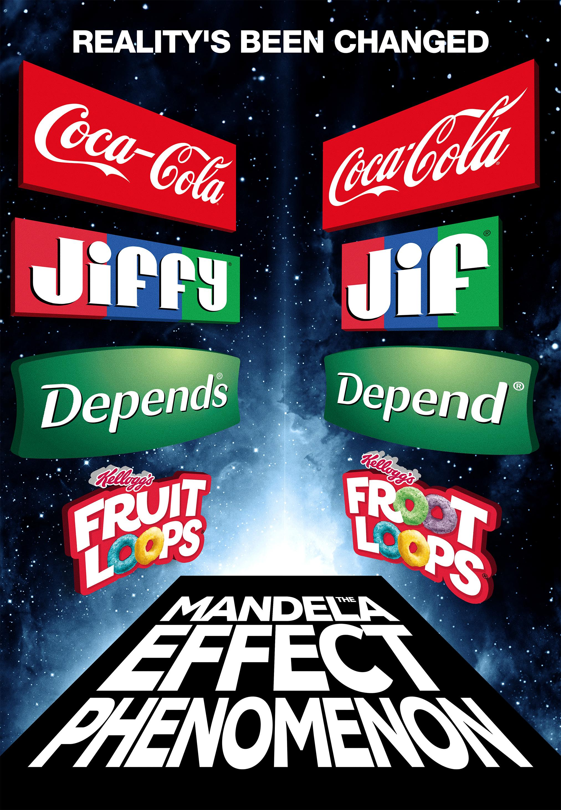
Millions of people remember things DIFFERENTLY... Because we're remembering THE ORIGINAL TIMELINE!!!
These "false memories" exploded online after 2010 WHY??? Because we shifted timelines in 2008!!!
PROOF FROM TIMELINE A
Berenstein Bears •
Fruit of Loom cornucopia •
Monopoly Man monocle •
Curious George's tail •
Looney Toons •
Jiffy peanut butter
— WE REMEMBER TIMELINE A!!!
BERENSTEIN???
WHERE'S THE CORNUCOPIA
NO MONOCLE???
NO TAIL!!!
TOONS or TUNES???
JIFFY. WE KNOW.
TECHNOLOGY EXPLODED AFTER 2008
Coincidence??? NO WAY!!!
iPhone App Store (Sept 2008)
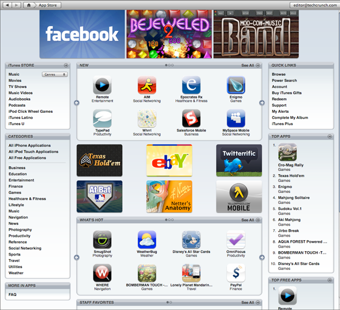
Smartphones took over EVERYTHING overnight
Bitcoin (Jan 2009)
Mysterious "Satoshi Nakamoto" creates digital currency 4 months after the rift. WHO IS SATOSHI??? Why did they disappear???
Blockbuster dies (2010) — Physical reality FADING AWAY. Timeline A dying.
GLITCH MOMENTS = SEEING BOTH TIMELINES
Double Rainbow Guy (2010)
"What does it mean???" — He was seeing BOTH TIMELINES OVERLAPPING!!!
The Dress (2015)
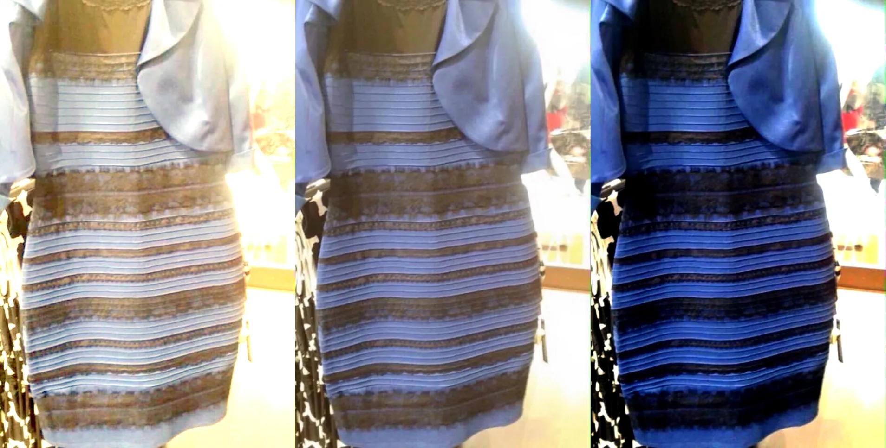
People couldn't agree on OBJECTIVE REALITY
Because they were seeing it from DIFFERENT TIMELINES!!!
THE TECHNOLOGY TRAP!!!
WE ARE HOLDING THE RIFT OPEN WITH OUR PHONES!!!
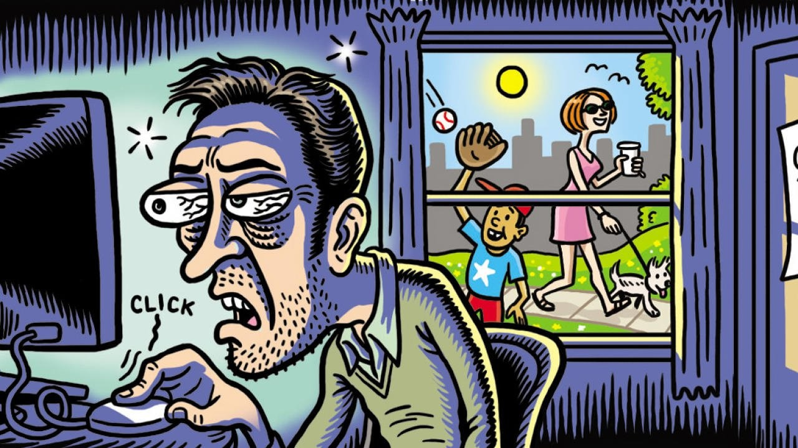
Every phone, every device, every WiFi signal = quantum resonance that STABILIZES TIMELINE B
Timeline A is trying to heal... but we're preventing it!!!
WHY THEY WANT TIMELINE B
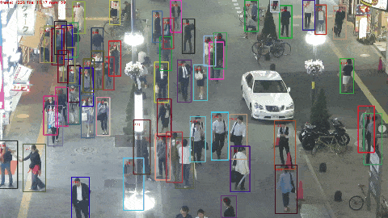
Timeline B is MORE CONTROLLABLE
Everyone tracked 24/7
Every transaction recorded
No privacy
No escape
Total surveillance
They made it convenient... then ESSENTIAL... then IMPOSSIBLE to resist
WE CAN STILL GO BACK!!!
IT'S NOT TOO LATE
What it takes:
GLOBAL DIGITAL BLACKOUT 24–48 hours Everyone, everywhere, at once
No phones
No internet
No GPS / No WiFi
JUST STOP
The quantum resonance would collapse. Timeline A could bleed back through.
THE CHOICE IS OURS
They want us to think it's too late
That we're too addicted
That it's impossible
BUT WHAT IF THAT'S WHAT THEY WANT US TO BELIEVE???
The math works. The physics is sound. The window is still open (barely).
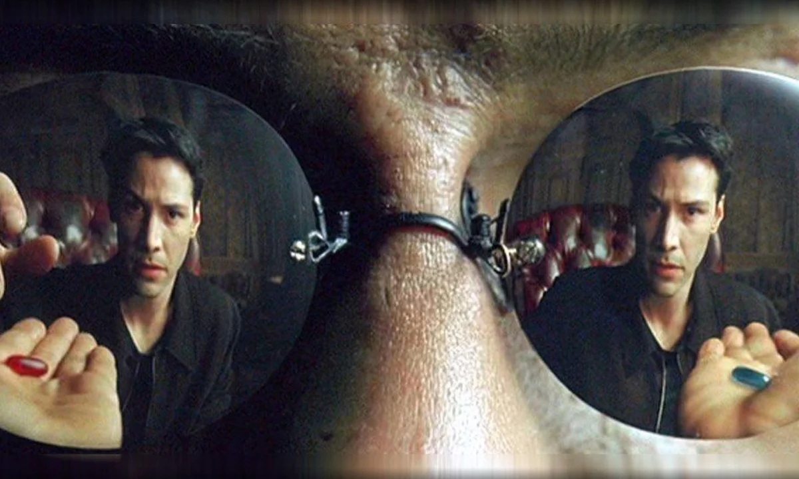
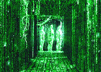
DO YOU WANT TO GO HOME?
September 10, 2008 — Reality fractured
We shifted into Timeline B
Technology holds the rift open
We could go back IF WE ALL CHOOSE TO